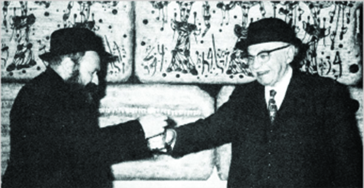

The Partisan, the President, and the Philanthropist
R’ Sholom Stroks tells about the pardon he got from Shazar thanks to the intervention of “the partisan” R’ Zushe Wilyamovsky and R’ Shlomo Maidanchek. The Rebbe said that this pardon atoned for all of Shazar’s sins! * A chapter from the book, “The Partisan,” which was edited by Shneur Zalman Berger.

CLOSE CONNECTION WITH SHAZAR
Mr. Shneur Zalman Shazar, who came from a Lubavitcher family and was one of the leaders of the Jewish Agency, had a warm relationship with a number of Lubavitchers in Tel Aviv and Kfar Chabad. He would visit them and they often visited him, but what really stood out was the special regard the Rebbe had for him. This was expressed in the many letters the Rebbe wrote to him, the countless delegations sent to meet with him, as well as the well publicized visits that Shazar paid the Rebbe. These ties resulted in much help provided to Chabad mosdos in Eretz Yisroel.
Later on, Shazar was elected to the highest office as President of the State of Israel. From then on, the relationship took on a whole new dimension.
The paper Panim el Panim told about the sudden visit Shazar made to Kfar Chabad on 23 Iyar 5723, four days before he was elected president. During this visit, an interesting discussion ensued between Shazar and R’ Zushe:
“Now it won’t be easy to reach you,” said R’ Zushe Wilyamovsky, who used to visit Shazar in his Jewish Agency office as well as at home.
“Why?” asked Shazar.
“Because gendarmes will stand guard at the door,” said R’ Zushe with a smile.
“Can policemen stop you?” asked Shazar, smiling broadly. He knew R’ Zushe had been a partisan and that there was no force in the world that could stop him when he was involved in spreading Chassidus.
THE PARDON
The day Shazar was voted for this high office, his friends at the Jewish Agency made him a goodbye party. It was called for 8:00, but there was no sign of him by 8:30, which was unlike him. He finally showed up and one of the people escorting him apologized saying that he, Shazar, had been in an important meeting with a Chabad delegation. The official reason for the meeting was to congratulate him on his being elected, but important matters were decided that only came to light later.
Among the people comprising the Chabad delegation were his old friends, R’ Zushe and R’ Shlomo Maidanchek. During the meeting, one of the Lubavitchers raised the issue of pardoning the famous inmate, R’ Sholom Stroks, Yossele Schumacher’s uncle. R’ Sholom was a Lubavitcher and these Chabad askanim used their influence to try and have him released. R’ Sholom was released not only because he was a Lubavitcher, but also because of diligent work that was done behind the scenes in the case of Yossele Schumacher.
For the sake of the reader who is unfamiliar with the Yossele saga that rocked the country, let’s go back and review the history, particularly as it relates to R’ Sholom and the work of the Chabad activists.
***
18 Teves 5720. The Yossele story was all over the media, which reported the “Kidnapping of a Boy by his Grandfather.” The story began with the financial difficulties experienced by a couple named Alter and Ida Schumacher who had made aliya with their two children. They asked Ida’s parents, Breslover Chassidim who had made aliya from Russia and lived in Mea Sh’arim, to raise their children.
They sent the nine year old Zeena to Kfar Chabad and Yossele was taken in by R’ Nachman and his wife Miriam Stroks. When the young couple’s financial state improved, they wanted their children back. The grandfather agreed to take the girl out of the dormitory in Kfar Chabad and return her to her parents. He promised to return Yossele with the start of the new school year, but did not follow through on this.
The grandfather refused to return the boy because he said the parents wanted to return to the Soviet Union and raise the boy as a communist. R’ Nachman had come from Russia and knew what that meant. He could not part with his grandson who would be taught to hate Judaism and disdain the values of religion and Eretz Yisroel.
The parents insisted on getting their son back and then Yossele disappeared. The parents feared he had been sent out of the country and they asked the court system for help. Despite court orders, the grandfather refused to have the boy returned to his parents.
SEARCHING FOR YOSSELE
The police entered the picture, but despite its best efforts, they could not find Yossele. They suspected that R’ Sholom, the boy’s uncle, was involved in the boy’s disappearance and tried to arrest him, but he too disappeared. The police searched for Yossele as well as for his uncle, R’ Sholom, in ultra-Orthodox institutions throughout the country including Chabad mosdos in Yerushalayim, Rishon L’Tziyon and Lud, to no avail.
In the meantime, Yossele had been squirreled away to Europe, and from there to New York, while R’ Sholom had escaped to London where he hid. Back in Eretz Yisroel, the level of hatred towards religious Jews reached new heights. Any religious Jew on the street was accosted and asked, “Where’s Yossele?”
At this point, Prime Minister David Ben Gurion decided to get the Mosad, headed by Isser Harel, involved. This was no longer a mere family altercation but a cultural war. The Mosad devoted endless resources to this case until they located R’ Sholom in London and he was arrested. The State of Israel asked for his extradition. Many people got involved who tried to see to it that he would not be extradited. Among them were Rabbi Yaakov Landau, rav of B’nei Brak, but in the end, R’ Sholom was extradited and was sentenced to three years in jail.
Shortly afterward, on 29 Sivan 5722, Yossele was found in New York living with a Satmar family and he was sent back to his parents.
SHOLOM STROKS RELATES
The Yossele saga had concluded but R’ Sholom remained in jail. The talmidim of Tomchei T’mimim in Lud came to his aid. His friend, R’ Yaakov Reinitz said, “I knew him for years beforehand and I felt it was a privilege to help him. My friends and I brought him food with proper kashrus supervision as well as s’farim, to make his stay in prison easier.”
R’ Sholom refused to be interviewed about Yossele (aside from one exception), saying that the media distorts things, but he was willing to do so in honor of R’ Zushe:
“The boy spent a long time with me and my father. We didn’t kidnap him from anyone. We simply didn’t return him … My sister wanted to take him back to Russia and we were forced not to return him in order to save him. We did this with the p’sak of rabbanim.
“During that time we received letters from the Rebbe about it, but because it was clear that they were searching for me, the Rebbe wrote the letters in Russian and Yiddish and they were sent to another address from where they were brought to me.
“I was arrested in England where I suffered for over a year. Then I was extradited to Eretz Yisroel and was sentenced to three years in jail. I did not complete the jail sentence because after a year and three months, I was released following a pardon by President Shazar. R’ Shlomo Maidanchek and R’ Zushe Wilyamovsky were instrumental in this, which is why I am so grateful to them.”
THE CHABAD DELEGATION
As mentioned earlier, the pardon was granted on the day Shazar was appointed as president. It seems that the decision was made during that meeting with the Chabad delegation. This meeting was documented in the newspapers of the day:
“On the day Mr. Shazar was elected, the members of the Jewish Agency administration held a goodbye party for him. It was called for 8:00 but the clock showed 8:30 and the guest of honor was late. More time went by until he arrived with his entourage. One of his escorts explained, “Mr. Shazar is so sorry but at 7:45 a delegation from Kfar Chabad came to his house to congratulate him on his being elected and as you know, Chabad comes first …”
Among the askanim were R’ Shlomo Maidanchek who served as the chairman of the vaad of Kfar Chabad, R’ Zushe who was the secretary of the vaad of Kfar Chabad, and R’ Yona Eidelkopf.
When R’ Sholom Stroks was released from jail, he was welcomed at the prison gates by R’ Shlomo Maidanchek and his friends, R’ Sholom Leib Eisenbach and R’ Yaakov Reinitz.
REUNITING A COUPLE
Surprisingly, ten days later, the Rebbe spoke about this openly in a sicha on Shabbos, 9 Sivan 5723. The Rebbe responded to those who complained, asking why he was so warm to Shazar who was not religiously observant. The Rebbe said:
… Someone who rose to greatness at the hands of Jews, and “upon every group of ten [Jews], the Sh’china settles,” especially as amongst them there were numerous tens of G-d fearing people, and [as such] all his sins till now are forgiven … there are those who ask questions but questions are not from the side of good, as the Rebbe, my father-in-law, said when you want to know about something, see what the results are. In this case, he immediately returned a man to his wife and son, [an act of] oseh shalom [making peace], and as I received in a letter, it was a difficult battle. And especially when he did this immediately, on the first day upon his rise to greatness, which is a great thing.
The Rebbe referred directly to the pardon that Shazar gave, hinting with the words “oseh shalom” to the release of R’ Sholom, which was no easy matter. But the Rebbe did not suffice with a hint and a few days later, on Thursday, 14 Sivan, the paper Der Tog Morgen Journal had excerpts from the sicha that had been edited especially for the paper. It said:
“The Rebbe explained that even though, among certain groups, there were complaints about Shazar’s election being the cause of joy for religious Jews, it was necessary to look at the results in order to come to a determination. In this case, he [Shazar] began his work on the day of his appointment by pardoning a number of Jewish inmates, as a result of which he united a husband and wife – the Rebbe was surely referring to the pardon of Yossele Schumacher’s uncle, Sholom Stroks, who can now unite with his wife and children. Stroks had been cut off from his family for more than two years.
“The Lubavitcher Rebbe said that the alacrity to pardon Jews is tangible proof that even this one act justified his election …”
That is how R’ Zushe and R’ Shlomo had the privilege of fulfilling the mitzva of redeeming captives and giving the Rebbe much nachas.
As to how involved the Rebbe was in the Yossele saga, we still do not know.
MILLIONAIRE DISCOVERED TO BE A RELATIVE
Speaking of the warm relationship between R’ Zushe and Shazar, we must mention Beit Shazar in Kfar Chabad, a spacious building which was named in honor of President Shazar. The building was erected thanks to the relationship that R’ Zushe developed with the British millionaire, Sir Isaac Wolfson. It was quite an unusual relationship as the two did not share a common language.
How did R’ Zushe, the Chassidic partisan from Kfar Chabad get to know the British millionaire? And what was it about him that captivated the philanthropist?
It began when R’ Meir Wilyamovsky chastised his cousin R’ Zushe: “Sir Isaac Wolfson is our relative. Contact him and stop running around raising money for Kfar Chabad and the Chabad mosdos!”
R’ Zushe did not understand how he had suddenly become a relative of a millionaire who donated huge sums of money to educational institutions in England and Eretz Yisroel. He asked his cousin to draw a family tree. Meir did so and then R’ Zushe saw how they were distant cousins (Sir Isaac’s mother was Nechi Surah Wilamowski). “However,” said Meir, “because of the Holocaust, only few family members are still alive and Wolfson will definitely take an interest in the familial relationship with you.”
When R’ Zushe had his first yechidus, he told the Rebbe what his cousin had said and even showed the Rebbe his family tree. The Rebbe told him to contact Sir Isaac in order to get his help in spreading the wellsprings.
WOLFSON TALKS ABOUT HIS WEALTH
Sir Isaac Wolfson (d. 1991) was a religious Jew from Scotland. Queen Elizabeth bestowed him with a baronetcy. He spoke about his wealth and his philanthropy in 5726 in an interview with Refael Bashan of Maariv. In this interview, he stated that money was not his goal; helping humanity was his goal. He was a guest of the Queen as well as presidents of African countries and he ate kosher food at these meetings which was flown in especially for him.
Wolfson said his plans were to establish fifty youth centers in Eretz Yisroel, which he did. “Do you know what I want?” he said to Bashan. “That in each youth center there should be a small area with a table and little Aron Kodesh so that whoever wants to pray, can do so.” He said that thus far he had donated six million pounds sterling in Eretz Yisroel and ten million in England. He is quoted as having said, “No man should have more than £100,000. The rest should go to charity”.
When he was asked about his businesses he said, “I will tell you on one foot what my businesses consist of. Are you writing it down? Ships and banks, coffee plantations, wholesale and retail outlets, factories in Hong Kong, Singapore, and South America, North America, Canada, South Africa, and Australia. And 2,500 branches of Great Universal Stores in Britain dealing in men’s, women’s and children’s wear and numerous other items.”
This is the man R’ Zushe wanted to meet and he managed to obtain an appointment to see him. They met in the Weitzman Institute in Rechovos where Wolfson had an apartment. After R’ Zushe presented his family tree, the conversation turned to his work as secretary of the vaad of Kfar Chabad. Wolfson saw that R’ Zushe was a devoted, dynamic askan, and he offered him a job overseeing the establishment of shuls in Eretz Yisroel for the Wolfson Foundation that he had founded.
“Drop the difficult work you do and work for me. You will immediately receive $50,000 in cash as well as a good salary for work that is not particularly difficult.”
R’ Zushe immediately responded, “I prefer being a devoted soldier of the Rebbe with a paltry salary than getting a high salary.”
Wolfson was impressed and he expressed his amazement afterward to Mr. Meir Weisgal, President Chaim Weitzman’s personal secretary, who served as the director of the Weitzman Institute.
“Usually, someone who discovers he is my relative comes to meet me and immediately asks for financial aid. Zushe though, not only did not ask for anything for himself, but when I offered it to him, he declined.”
R’ Zushe did not think of himself at all. He only wanted to work on matters concerning Chabad and the Rebbe. He said later on:
“In the first instant, I thought of accepting his offer, but then I rejected the idea. Since I received instructions from the Rebbe to be involved in Chabad mosdos, if I worked in some side thing, even for only two hours a day, during that time I would not be mekushar to the Rebbe. That is why I rejected the offer.”
THE GROUNDBREAKING
In their second meeting, R’ Zushe suggested that Wolfson build a youth center in Kfar Chabad, a suggestion encouraged by the Rebbe. Wolfson wanted to name the center for President Shazar and that is what the youth center in Kfar Chabad was called, Beit Shazar.
The groundbreaking took place with much pomp on the Chag Ha’Geula, 12 Tammuz 5724/1964 which marked fifteen years since the founding of Kfar Chabad. President Shazar and Sir Wolfson were in attendance as well as hundreds of residents of Kfar Chabad and dozens of rabbanim and ziknei Chassidei Chabad from all over the country.
Construction took a number of years and the Rebbe asked them to speed things up. R’ Zushe kept turning to Wolfson who donated large sums of money. Wolfson also used his connections in various government offices so they too would be helpful. Thanks to R’ Zushe’s nonstop efforts, Wolfson donated money that covered most of the expenses of Beit Shazar.
In yechidus on 11 Tishrei 5727, the Rebbe asked R’ Zushe about the construction of the youth center. First, the Rebbe asked about the upcoming visit of Wolfson. Then he asked about the construction.
“The building is 98% finished, but since we need to impress Wolfson, we need the peripherals like an Aron Kodesh, tables, nice doorknobs and the like,” said R’ Zushe.
The Rebbe asked about sources of funding and R’ Zushe detailed the amounts he had received from Wolfson, the Housing Ministry, the Education Ministry, the Lottery Commission, the Center for Agriculture and the Interior Ministry. R’ Zushe recounted how Wolfson himself told the ministers that he owed R’ Zushe because they were relatives …
CHANUKAS HA’BAYIS
In this yechidus, the Rebbe asked about a date for a Chanukas Ha’bayis, which ended up taking place on Rosh Chodesh Cheshvan 5729. This marked twenty years since the founding of Kfar Chabad.
A month before the event, the members of the vaad of Kfar Chabad and R’ Zushe visited with Shazar. Other rabbanim and askanim joined them. They blessed him for the new year and invited him to the grand celebration.
The Rebbe wrote a letter to Shazar in which he said, “May the building be worthy of its name.”
The Chanukas Ha’bayis was attended by Shazar, Wolfson, Chief Rabbi Isser Yehuda Unterman, Interior Minister Moshe Chaim Shapiro, the British ambassador, rabbanim, Knesset members, public figures and many guests.
After the speeches, Sir Wolfson cut the ribbon at the entrance to the building. President Shazar put up the mezuza in the entranceway, and some rabbanim and honored guests went inside to the shul to daven Maariv. In the new shul, the Aron Kodesh was decorated with a paroches dedicated to the memories of Shazar’s brother and sister who had passed away in Eretz Yisroel.
Beit Shazar first served as an elementary school for Kfar Chabad. Later on, it served as a branch of Tzeirei Chabad in Kfar Chabad and was a center for the hafatzas ha’maayanos to young and old. Today it is the center for Tzeirei Agudas Chabad in Eretz Yisroel.
Upon R’ Zushe’s request, Wolfson donated additional funds to shluchim of the Rebbe in England and for the large shul in Nachalat Har Chabad in Kiryat Malachi. Hundreds of residents of Nachalat Har Chabad and ziknei Chassidei Chabad participated in the groundbreaking and Chanukas Ha’bayis.
NO COMMON LANGUAGE
There was a warm friendship between R’ Zushe and Wolfson, despite their not having a common language. R’ Zushe did not speak English and Wolfson hardly understood Yiddish.
His son Levi said:
“My father met with Wolfson many times. He worked to convince Wolfson to donate towards the Chabad mosdos in and out of Eretz Yisroel and was very successful. I once went with my father to a meeting with Wolfson and couldn’t get over how Wolfson spoke in English and my father responded to him in Yiddish.
“After the meeting, I asked my father, ‘How did you speak to him about large donations and other important topics when you don’t even speak a common language?’
“My father said, ‘When you are on the Rebbe’s shlichus, you don’t need to know the language.’”
That was R’ Zushe!
WHY DO WE CELEBRATE 11 NISSAN?
The mashpia, R’ Levi Yitzchok Ginsberg relates:
R’ Zushe Partisan would occasionally visit Tomchei T’mimim in Kfar Chabad and visiting the bachurim’s dining room, sit down and drink a cup of tea. The bachurim, sitting around the table, would crowd around him and want to hear what he had to say. Sometimes he remained silent and they couldn’t get a word out of him. To every question he would answer, “That’s a military secret.”
Sometimes, when he was in the mood, he would share aphorisms and hergeshim of a Chassid, which expressed the deep inner truth of a Chassid and mekushar. Sometimes, R’ Zushe himself would say about these quotes, “These are not “Toras Zushe” and not “Drashos Zushe” but simply “Imrei Zushe.”
On one of these occasions, he said: We, Chassidim of the seventh generation, have three special holidays (this was before they celebrated additional holidays like Rosh Chodesh Kislev, 28 Sivan, and all the Didan Natzach days). One is 14 Kislev, the Rebbe and Rebbetzin’s anniversary. The second is Yud Shvat, when the Rebbe accepted the nesius. The third is 11 Nissan, the Rebbe’s birthday.
There are three aspects to the Rebbe: Rebbe, king and father. 14 Kislev is “the day that bound me with you and you with me,” the day we received the Rebbe as the Rebbe. Yud Shvat is the day the Rebbe became our nasi and king. 11 Nissan is actually a private day for the Rebbe, a day that doesn’t seem to pertain to us, for our connection with him occurred much later. And yet, the uniqueness of 11 Nissan is that even a personal matter of the Rebbe’s, like his birthday, relates to us. For our relationship with him is with every aspect of him, with no area outside of this bond.
Beis Moshiach (staff). "The Partisan, the President, and the Philanthropist." Beis Moshiach, no. 869 (February 13, 2013).